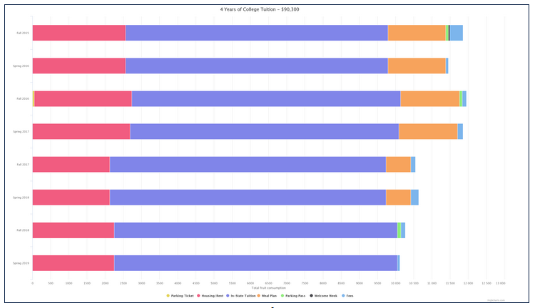

The purpose of this website is to act as an extended version of my Resume. Check out some of my social media by clicking one of the links in
the left pane or in the Contact Me section. If you'd prefer a summary, my Resume can be found by clicking the link below!
Work Experience
Senior Software Engineer - Ally Financial
March 2024 - Present
Leading full-stack development and AWS cloud architecture across two internal Treasury platforms for one of the largest digital-only banks in the U.S.
- FORT Pricing — the trading desk's primary analysis tool; engineered AWS infrastructure patterns now reused across the team.
- CLEAR — real-time view of the bank's available liquid cash, supporting Fed compliance; designed a novel AWS-based ETL framework that was later adopted by other projects.
Software Engineer - Global Custom Commerce
May 2022 - February 2024
Built features for The Home Depot's Design Builder product, enabling customers and in-store associates to customize and order doors, window blinds, and other made-to-order products.
Software Engineer III - Honeywell
July 2019 - May 2022
Joined a newly formed team in the Safety and Productivity Solutions group, building Operational Intelligence — a new product — from the ground up as part of Honeywell's push deeper into software.
Software Engineer Intern - Delta Bravo Artificial Intelligence
October 2018 - July 2019
Joined a small AI-acceleration startup. Picked up modern programming practices alongside the day-to-day realities of an early-stage company.
Undergraduate Researcher - University of North Carolina, Charlotte
May 2018 - July 2018
Research Experience for Undergraduates — built an Augmented Reality application for use by First Responders.
Software Engineer / Infrastructure Analyst Intern - SCANA Corporation
May 2017 - August 2017
Summer internship with SCANA (now Dominion). Built tools for the Cyber Security team, led a seminar to help teams migrate to Skype for Business, and shipped a media-team app during a 3-day hackathon.
Computer Technician - iDavid Computer Repair
May 2016 - August 2016
Started as an intern and grew into a full-time, paid role. Got a first-hand look at what it takes to run a small business day to day.
Education
Winthrop University
Bachelor of Science, Computer Science · Minor in Mathematics
Rock Hill, SC · 2015 – 2019
Relevant Courses: Discrete Mathematics, Calculus II, Computer Science with C++, Algorithm Analysis and Data Structures, Operating Systems
Thomas Sumter Academy
High School Diploma
Sumter, SC · 2011 – 2015
Relevant Courses: Pre-Calculus, Calculus I, Yearbook (Sports Editor)
Side Projects
A small collection of personal projects I've built outside of work — visualizations, experiments, and weekend builds I keep tinkering with.

College Tuition Visualized
Interactive charts exploring trends in U.S. college tuition over time, built with D3.
Awards
Consortium for Mathematics and it's Applications
In Spring of 2019 at Wintrhop University, 2 of my colleagues and I participated in the Consortium for Mathematics and it's Applications. COMAP's Mathematical Contest in Modeling (MCM) is an international contest for high school students and college undergraduates. It challenges teams of students to clarify, analyze, and propose solutions to open-ended problems. The contest attracts diverse students and faculty advisors from over 900 institutions around the world.
Our team chose problem statement C, title The Opioid Crisis, a Big Data problem. After applying some Machine Learning to the given dataset, we discovered a few interesting correlations. One of which was that the amount of Opioid Cases for a state increased as the amount of children under 18 who live with their grandparents increased. After developing a mathematical model for the problem, we generated a 25 page report and predicted that opioid cases will slightly go down in the near future.
Out of the 14,108 teams that entered the competition, we finished within the top 16% and received an "Honorable Mention" award. We were only the second team ever from Winthrop University to receive this high of a placement. The published paper, and the award, we wrote can be found here:
Download COMAP Paper